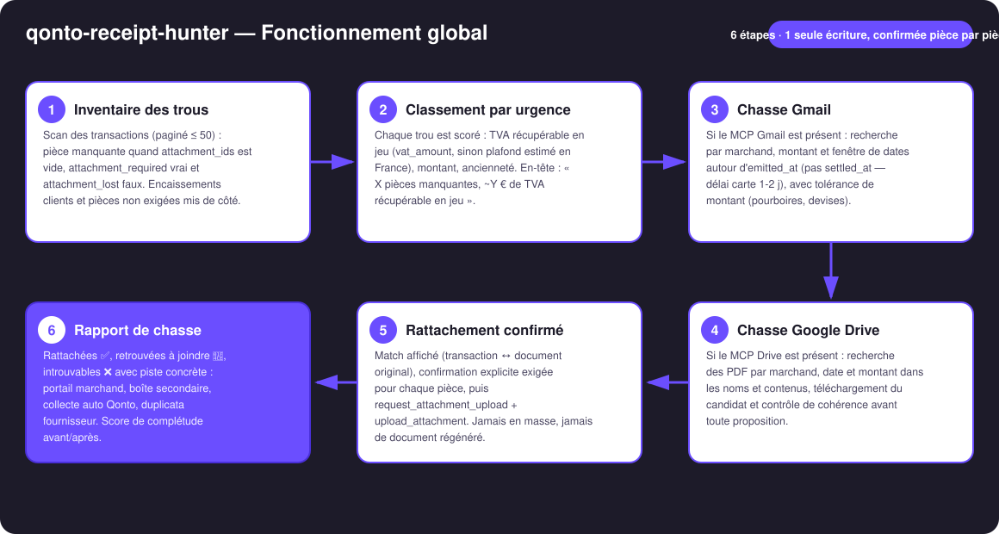
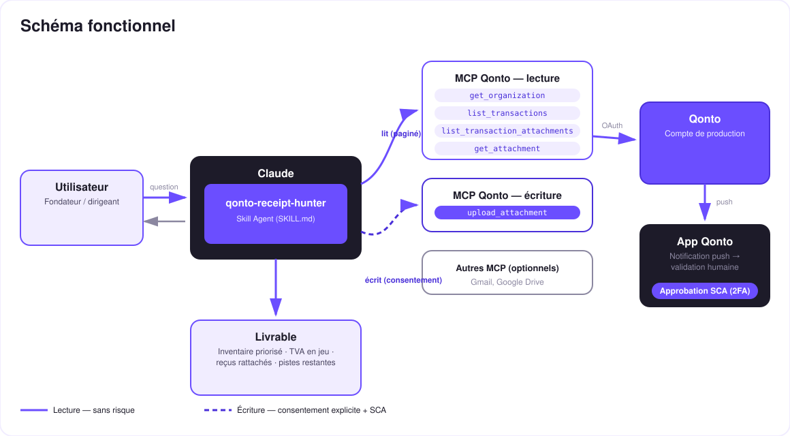

Justificatif Zéro — le chasseur qui retrouve tes reçus dans Gmail & Drive et les rattache à tes transactions Qonto.
La corvée universelle : ~20 % des transactions n'ont pas de justificatif. Chaque reçu perdu = TVA non récupérable, charge réintégrable, comptable furieux. Le skill transforme la corvée en chasse :
Les transactions sans pièce, classées par urgence : TVA récupérable en jeu, montant, ancienneté — tags 🔴🟠🟢.
Gmail (marchand + montant + dates autour de l'achat) et Google Drive — détectés dynamiquement.
Match affiché (transaction ↔ document original), confirmation par pièce, upload vérifié — jamais en masse.
Rattachées ✅, à joindre 📎, introuvables ❌ avec une piste chacune + score de complétude avant/après.
| Prérequis | Détail | Obligatoire |
|---|---|---|
| Compte Qonto production | Le skill s'adapte à toute organisation — get_organization d'abord, zéro donnée en dur | ✅ |
| Pays | Fonctionne pour tous les pays Qonto. Estimation « TVA en jeu » par plafond 20/120 : France uniquement ; ailleurs, seul le vat_amount renseigné est utilisé — jamais de taux deviné | ℹ️ détecté |
| MCP Qonto connecté | Connecteur officiel (claude.ai / Claude Desktop), login OAuth | ✅ |
| MCP Gmail | Alimente la chasse e-mails. Absent : le skill le dit et livre l'inventaire priorisé + où chercher | ⭕ recommandé |
| MCP Google Drive | Alimente la chasse fichiers | ⭕ optionnel |
| Périmètre | 90 derniers jours par défaut — extensible (trimestre, exercice) sur demande | ⭕ |

emitted_at — les paiements carte se règlent 1-2 jours plus tard (settled_at), et c'est là que les autres outils ratent le reçuclean_counterparty_name et le libellé brutattachment_required: false, encaissements clients et attachment_lost exclus du score · plusieurs candidats plausibles → le skill demande · pagination ≤ 50 partout
Intégrité des pièces, le garde-fou majeur : la seule écriture ajoute un document à une transaction — elle ne touche jamais à l'argent — et exige une confirmation explicite par pièce. Surtout : originaux uniquement (PDF du marchand, pièce jointe d'e-mail). Un justificatif fabriqué n'a aucune valeur probante et t'expose en contrôle fiscal — le skill n'en produira jamais.
| Critère | Signal | Effet |
|---|---|---|
| TVA récupérable en jeu | vat_amount renseigné ; sinon (France) plafond montant × 20/120, annoncé comme estimation | Poids principal |
| Montant | Les gros débits d'abord — c'est là que la réintégration fait mal | Fort |
| Ancienneté | Plus c'est vieux, plus la clôture approche et plus le duplicata est dur à obtenir | Fort |
| Exclusions | attachment_required: false · encaissements clients (side: credit) · attachment_lost | Hors score |
| Source | Méthode | Condition |
|---|---|---|
| Gmail | Marchand (variantes du nom) + montant + fenêtre autour de emitted_at, tolérance de montant ; cible : le PDF original du marchand | MCP Gmail connecté |
| Google Drive | Recherche par marchand/date/montant dans noms et contenus, téléchargement + contrôle de cohérence avant proposition | MCP Drive connecté |
| Introuvable ? | Piste concrète par trou : portail marchand (section factures), boîte pro secondaire ou perso, collecte auto de reçus Qonto, duplicata fournisseur | Toujours |
| Sortie | Format | Quand |
|---|---|---|
| Réponse dans la conversation | Tableaux markdown (inventaire priorisé, TVA en jeu, rapport de chasse) | Toujours — c'est la base |
| Rattachements Qonto | Pièces jointes réelles sur les transactions, visibles immédiatement dans l'app | À chaque confirmation |
| Rapport de complétude | Score avant/après + pistes restantes ; version HTML si l'hôte affiche les fichiers, tableaux sinon | Fin de session |
La démo ≤ 3 min jointe à la PR suit le storyboard : problème → inventaire priorisé (7 pièces manquantes, TVA en jeu chiffrée) → chasse Gmail en live → 5 reçus retrouvés et rattachés, un clic chacun → rapport final avec pistes pour les 2 restants. Tournée en live sur un compte de production réel.
| Idée | Effort | Note |
|---|---|---|
| Brouillons Gmail de demande de duplicata au fournisseur | Faible | Brouillons seulement — l'utilisateur envoie ; héritage direct de P5 |
| Rituel mensuel : score de complétude suivi mois par mois (streak) | Faible | Réutilise le rapport existant |
| Autres boîtes mail (Outlook/M365) détectées dynamiquement | Moyen | Même logique de chasse, autre MCP |
Détection de doublons de pièces (remove_transaction_attachment sous confirmation) | Moyen | Nettoyage inverse, mêmes garde-fous |
| Contrôle fin montant/TVA par lecture du PDF (multi-lignes, devises) | Moyen | Renforce le contrôle de cohérence |
emitted_at + tolérance de montant, annoncée dans chaque proposition